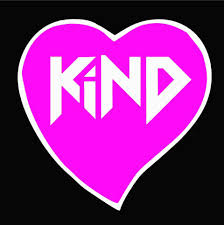

SHARON OLAGO

Projects
Some of the practice projects done include:
- Resort Website-This website is made for a hypothetical resort called Fun Time Resort. It has links to various pages on the main page such as to the accomodation page etc. Markup language HTML and style sheet language CSS were used to create it.
- Happy Trails Travel Agency-This website is made for a hypothetical Travel Agency called Happy Trails. It gives information about the agency. Markup language HTML and style sheet language CSS used.
- Favourite BandThis website contains information about my favourite band, OneRepublic. Markup language HTML and style sheet language CSS used.
- First webpageThis is the first webpage I created. Markup language HTML and style sheet language CSS used.
About me
My name is Sharon Faith. I like to think that people associate me with kindness when they meet me. I am a relatively quiet person until someone gets to know me well, which is a trait many quiet people seem to possess. I graduated from High School last year. Shortly after, in January this year, I went to Alliance Francaise to attend level B2 classes which would prepare me to sit for the DELF International Examinations in May, and the certification I gained is internationally recognised. After obtaining my certification, the official program ran till the end of June.
I had been interested in learning programming skills at a point during the course of this year. Having learned of the existence of Moringa School previously through an acquaintance and through online research, I was excited to learn that they had an August intake after I finished my French course. I joined Moringa school because in my opinion, programming is an essential skill in this day and age that gives one an extra edge. Software technologies are applied in almost all professions, so whatever one's future or current career path, gaining knowledge in programming is not off the mark.
I have a wide range of interests. I have always enjoyed reading novels. I do not have an overall specific genre that is my favourite. Instead, my favourite books span over different genres. In addition to that, I love music.I am currently learning how to play the piano. I would love to learn how to play the guitar as well. I am also practising my skills in drawing. I enjoy watching a good series or movie as well during my free time. Some of my favourite shows/movies include:
- Blacklist
- Quantico
- Avengers movies
- Money heist etc.
I'd also like to learn how to play tennis well in the future
Any Comments